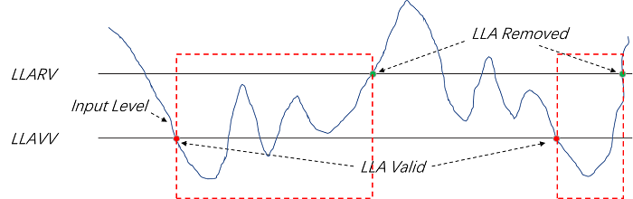

13.2.2. 功能描述¶
13.2.2.1. 关于采样的定义¶
为了方便表述，本模块引入三个有关采样的定义。
单次采样：是指对任意输入的一次ADC采样，对应一条ADC采样命令；
单点采样：是指ADC在任意一个时间点（或者信号点）开始的连续采样，有可能是单次采样，也有可能包含多次采样， 例如ADC在一个时间点开始对某个特定信号进行多次采样（多条ADC采样命令），以获得多个采样值，然后进行适当的滤波（例如算数平均），以获得一个更加准确和稳定的结果。
周期采样：是指ADC在对特定信号的进行固定间隔的单点周期采样，每个周期就进行一次单点采样。
13.2.3. 中断产生机制¶
13.2.4. 高/低电平报警阈值描述¶
本节重点澄清两个概念：低电平报警阈值，高电平报警阈值。
高电平报警阈值分为两个，分别为高电平报警有效阈值（HLAVV），高电平报警解除阈值（HLARV），如下图所示。 HLAVV≥HLARV，并且（HLAVV-HLARV）为高电平报警的迟滞值，必须覆盖信号的正常抖动范围，才能保证不会反复出现虚警。
低电平报警阈值分为两个，分别为低电平报警有效阈值（LLAVV），低电平报警解除阈值（LLARV），如下图所示。 LLAVV≤LLARV，并且（LLARV-LLAVV）为低电平报警的迟滞值，必须覆盖信号的正常抖动范围，才能保证不会反复出现虚警。
13.2.5. 高/低/正常电平数据界定¶
寄存器GPAI_CHnACR定义了高电平数据，低电平数据，以及正常电平数据。下面会重点介绍这三个概念。
高电平采样数据，是指高电平报警使能之后，高电平报警有效（HLAV），高电平报警解除（HLAR）期间所取得的采样数据。 如下图所示，虚框范围内的信号就是高电平采样数据对应的信号，也可以看出高电平采样数据一定不小于高电平报警解除阈值（HLARV）。
低电平采样数据，是指低电平报警使能之后，低电平报警有效（LLAV），低电平报警解除（LLAR）期间所取得的采样数据。 如下图所示，虚框范围内的信号就是低电平采样数据对应的信号，也可以看出低电平采样数据一定不大于低电平报警解除阈值（LLARV）。

正常电平采样值，就是指排除了高电平采样值（高电平报警使能的情况下）和低电平采样值（低电平报警使能的情况下）之后的所有采样值。
注释1：数据都是算数平均之后的值。
注释2：复位之后，第一个值都是跟0x0000_0000对比。